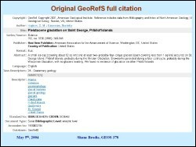
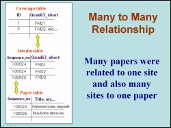
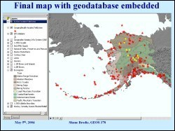

 When searching Earth Science research databases such as GeoRefS, WorldCat or even the UAF catalog, it is not possible to search by giving the coordinates of a geographic location, becuase the references either do not have an associated geographic location, or this information is very crude. The Alaska Quaternary Center (AQC) has decided to build a geodatabase in ArcMap and ArcIMS to display Quaternary research field sites in Alaska. The geospatially located field sites are clickable and related to research citations previously downloaded from GeoRefS. This project was the first attempt in building such a geodatabase in ArCGIS.
 The first step in this study was to retrive the citations from GeoRefS as tab-delimited file. This data was imported into Excel and edited till we had only the desired columns spreadsheet. As the geodatabase had a many-to-many (M-N) relationship where many papers can be located at one field site and many field sites can be the focus of one paper, interim tables were created to relate data as shown in the figure. Without the interim tables, ArcMap would only select one field site per paper or one paper per field site.
 A personal geodatabase was then created in ArcCatalog and all coverage files were imported into the geodatabase by first converting them to feature classes. This figure shows the final map with the geographically located field sites and the author located sites displayed. The database behind this map has Quaternary research papers using the GNIS coverage. Over 500 papers are included by latitude, longitude, and quadrangles. Over a 1000 papers are included by ecoregion. The “ecoregion” distinction comes from a field (the “commoner" field) in the Unified Ecoregions coverage from the USGS in 2001.